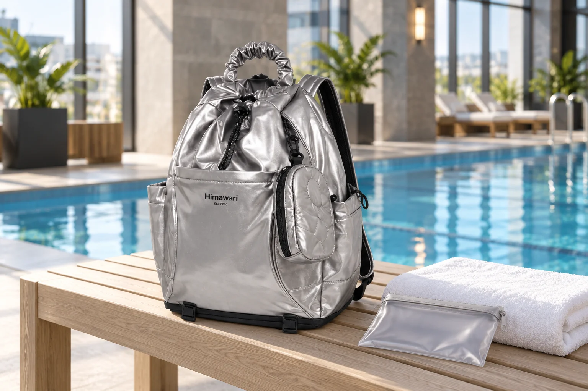

수영장 가방은 돌아올 젖은 묶음부터

수영장에 가기 전에는 수건과 옷이 마른 상태로 반듯하게 놓입니다. 돌아올 때는 사용한 수건이나 수영복, 물기가 남은 소품이 생깁니다. 출발할 때 가방에 모두 들어갔다는 사실만으로 귀가 준비까지 끝난 것은 아닙니다. 마른 물건의 자리를 정할 때 사용 뒤 어느 묶음으로 옮길지도 함께 생각해볼 만합니다. 백팩 한 개의 크기를 늘리기보다 물건의 상태가 바뀌는 순간을 정리하는 방식입니다.
시설에서 안내한 개인 준비물과 제공 물품을 먼저 확인합니다. 수건과 샤워용품, 보관함 이용 등 실제 방문할 곳의 안내에 따라 직접 가져갈 것을 고릅니다. 다른 시설에서 쓰던 목록을 그대로 적용하면 제공 물건을 중복해서 챙기거나 필요한 준비를 놓칠 수 있습니다. 목록을 만든 뒤에는 각각의 물건이 사용 전과 사용 뒤 어떤 상태로 돌아오는지 적어볼 수 있습니다. 이 구분이 분리해 운반할 묶음의 기준이 됩니다.
마른 옷을 꺼낼 순간
갈아입을 옷과 지갑, 전자기기처럼 젖은 물건과 바로 닿지 않아야 할 개인 짐은 닫힌 묶음으로 둡니다. 수영복을 꺼낼 때 마른 옷까지 모두 펼치지 않도록 실제 순서를 정해보세요. 보관함 앞에서 가방의 깊은 곳을 찾을 필요 없이 필요한 묶음부터 꺼내는 구성이 가능합니다. 별도 주머니를 쓴다면 그 용도와 닫힘을 확인하며, 물에 닿아도 된다는 조건은 해당 물건의 안내에서 판단합니다.
세면용품이나 음료가 있다면 용기의 뚜껑과 운반 방향을 따로 봅니다. 작은 용기는 개인 파우치의 빈자리에 들어간다고 아무 물건과 맞대어 두지 않습니다. 종이와 전자기기에 직접 닿지 않을 위치를 정하고 사용할 때 한 번에 꺼낼 묶음을 만들 수 있습니다. 용기를 넣은 자리와 젖은 수영복이 돌아올 자리를 함께 계획하면, 귀가할 때 같은 공간에 여러 상태의 물건을 급히 밀어 넣지 않아도 됩니다.
젖은 물건을 담을 주머니
사용한 수영복과 수건을 운반할 별도 주머니는 출발 전에 준비합니다. 빈 주머니만 가방에 넣어두기보다 실제 사용할 물건을 기준으로 필요한 크기와 닫는 방식을 확인하세요. 사용 후 물기가 얼마나 남을지는 현장에서 봐야 하므로 젖은 물건을 가방 안감에 직접 넣는 것을 기본 방식으로 삼지 않습니다. 분리용 주머니가 목적에 맞는지와 현재 상태에서 사용할 수 있는지를 확인하고, 필요한 경우 시설 안내에 맞는 별도 운반을 선택할 수 있습니다.
Himawari No.0515 제품 정보의 실버 모델을 개인 외출 가방으로 살필 때에도 젖은 물건의 분리는 별도 준비입니다. 백팩이 수영장 전용이라는 전제 없이 마른 개인 짐을 찾을 자리와 사용한 물건을 옮길 묶음을 각각 검토할 수 있습니다. 실제 수건과 옷을 담아보고 보관함에서 꺼낼 순서가 가능한지 확인하세요. 가방의 외형이나 수영장 연출 장면은 방수나 침수 방지 성능을 대신 설명하지 않습니다.

예를 들어 마른 옷은 하나의 닫힌 묶음에 두고, 사용한 수영복과 수건은 귀가용 주머니로 옮기는 구성을 생각할 수 있습니다. 출발할 때 귀가용 주머니를 어디에 둘지 정하면 보관함에서 다시 찾기 쉽습니다. 사용하는 물건의 크기와 수량이 달라지면 묶음도 달라지므로 하나의 방식으로 고정할 필요는 없습니다. 물기가 많은 상태에서 해당 주머니의 용도에 맞지 않는다면 다른 운반 방법을 선택하는 것이 필요합니다.
보관함 앞에서 남는 물건
시설에 들어갈 때는 안내된 순서와 공간을 이용하며 개인 물건을 정리합니다. 신발과 옷, 작은 소품을 어디에 놓았는지 알아두고 보관함을 닫기 전에 필요한 것이 있는지 확인합니다. 보관함 키나 출입 밴드가 제공된다면 시설의 사용 안내를 따르고, 반환할 때까지 어디에 있는지 알아둘 수 있습니다. 다른 소지품에 임시로 섞지 않으면 귀가 준비 중 별도로 찾아야 하는 물건의 범위가 줄어듭니다.
돌아갈 때는 마른 옷을 꺼내는 동작과 사용한 물건을 담는 동작을 나누어 생각합니다. 젖은 물건을 먼저 가방에 넣고 그 아래의 옷을 찾으려 하면 다시 꺼내야 할 수 있습니다. 실제 사용하는 시설의 공간과 안내에 맞춰 물건을 펼칠 범위를 정하세요. 공용 벤치나 주변 면에 소품을 두었다면 가방을 닫기 전에 그 자리도 살핍니다. 가방 자체는 허용된 위치에 두고 다른 사람의 이동을 막지 않도록 끈을 정리하면 됩니다.
시설을 나서기 전에는 사용한 물건용 주머니의 닫힘을 확인하고 마른 소지품과 따로 놓였는지 봅니다. 추가로 들고 나갈 묶음이 생겼다면 백팩 외의 짐으로 포함합니다. 대여한 물건이나 반환할 표식이 있다면 안내된 위치에서 처리한 뒤 이동하세요. 귀가 길에 지갑이나 휴대전화를 꺼낼 때 사용한 물건 묶음을 함께 빼지 않아도 되는 배치인지 마지막으로 살펴볼 수 있습니다.
집에 도착하면 먼저 펼칠 묶음
집에서는 젖은 물건용 주머니부터 꺼내 내용물을 각 제품의 세탁과 건조 안내에 따라 정리합니다. 임시 운반용으로 닫아두었던 상태를 다음날까지 그대로 보관하는 방식과 구분하면 됩니다. 백팩 안쪽에도 물기가 옮겨졌는지 확인하고 관리 표시가 안내하는 방법으로 처리하세요. 세탁기나 건조기 사용 여부는 제품 안내에서 확인할 일입니다. 사용한 물건을 먼저 펼치면 다음 외출의 깨끗한 짐을 넣을 자리도 다시 살필 수 있습니다.
반복해서 같은 수영장을 이용한다면 실제로 부족했던 묶음만 조정합니다. 수건의 수량이 달라졌는지, 귀가 주머니를 찾기 어려웠는지, 마른 옷을 꺼내려면 다른 짐을 빼야 했는지를 기록할 수 있습니다. 시설 제공 물품이 바뀌었다면 현재 안내와 목록을 다시 대조합니다. 다음 출발의 가방을 반듯하게 채우는 일과 돌아올 물건을 나누는 일이 함께 이어질 때, 보관함에서 다시 정리해야 할 범위가 줄어듭니다.